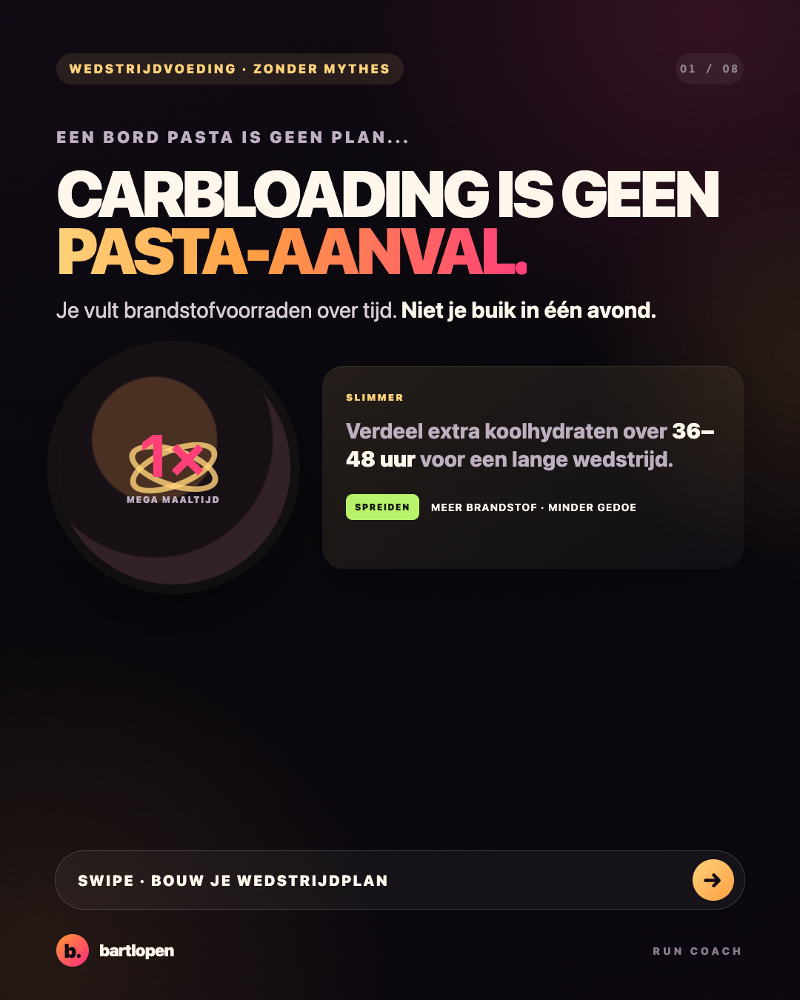
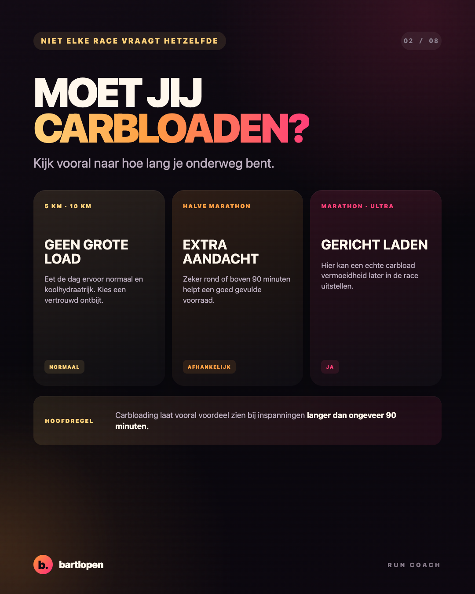
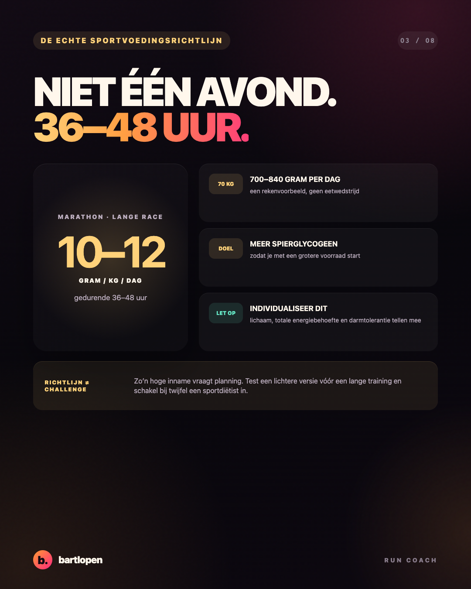
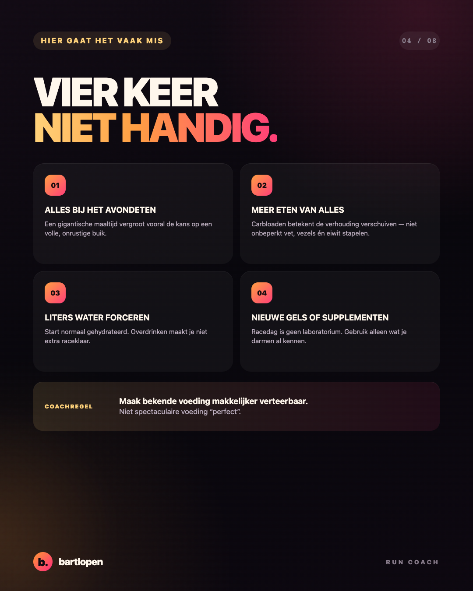
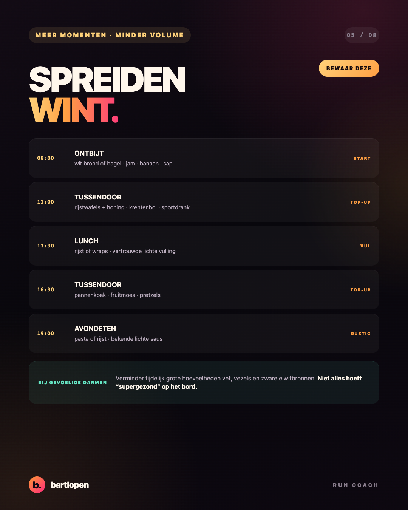
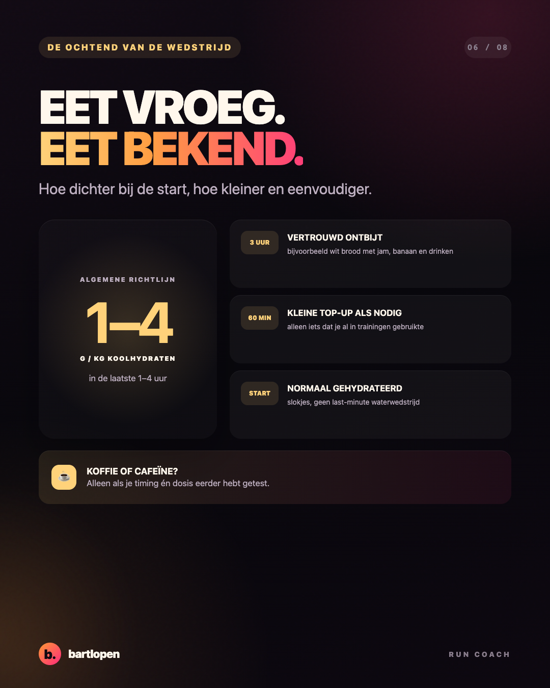
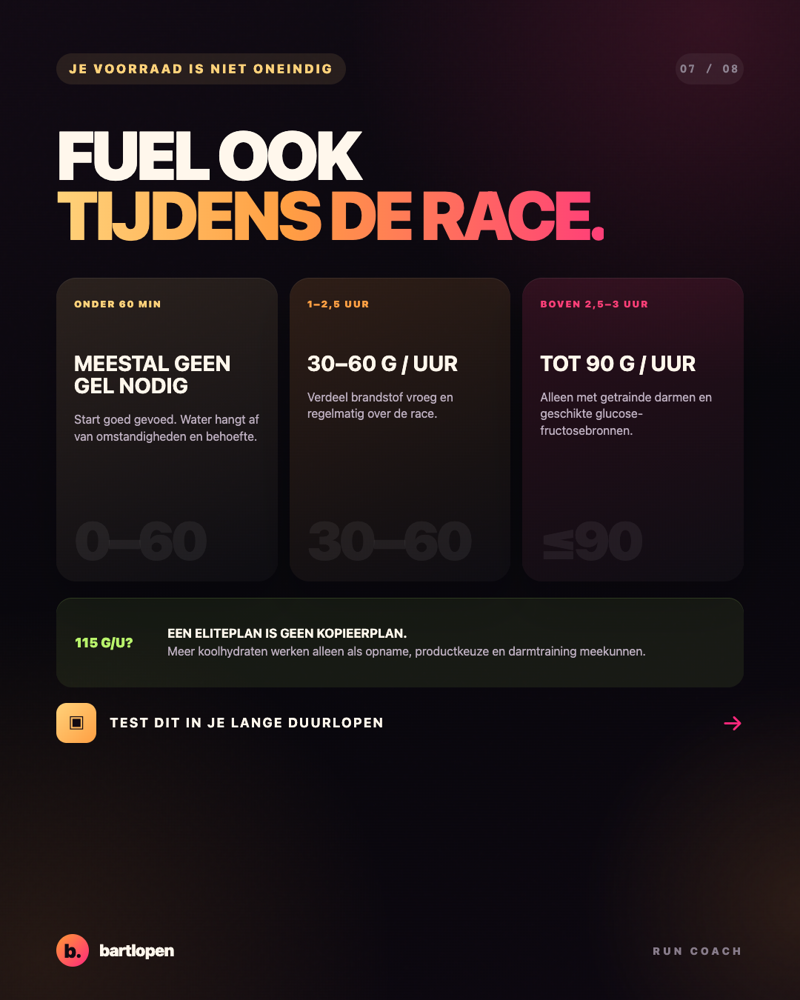
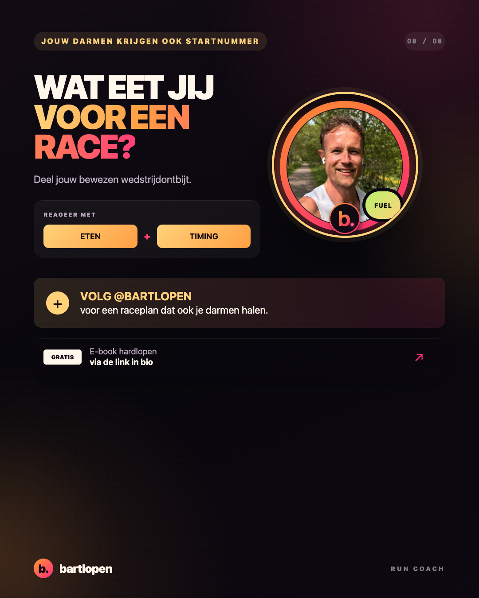

SLIDE 01 ↗Carbloading
zonder buikpijn
Acht premium slides over carbloaden, wedstrijdontbijt en brandstof tijdens de race. Gebouwd in 4:5-formaat voor Instagram en TikTok Photo Mode.

SLIDE 02 ↗
SLIDE 03 ↗
SLIDE 04 ↗
SLIDE 05 ↗
SLIDE 06 ↗
SLIDE 07 ↗
SLIDE 08 ↗Caption
CARBLOADING = ZOVEEL MOGELIJK PASTA? NEE 🍝 Voor een marathon vul je je brandstofvoorraad niet met één gigantisch bord op zaterdagavond. Een slimmer plan: ⏱️ verdeel koolhydraten over 36–48 uur 🏃 pas de aanpak aan op je wedstrijdduur 🥯 kies bekende, makkelijk verteerbare producten 🌅 test je wedstrijdontbijt tijdens lange trainingen ⚡ begin op tijd met brandstof tijdens de race Voor een 5 of 10 km heb je meestal geen volledige carbload nodig. Voor een marathon kan het wél verschil maken. Belangrijkste regel: niets nieuws op racedag. Wat is jouw vaste wedstrijdontbijt? 👇 #hardlopen #carbloading #marathontraining #wedstrijdvoeding #bartlopen
Inhoud gecontroleerd met de sportvoedingsrichtlijnen van World Athletics en het Australian Institute of Sport, plus gepubliceerd onderzoek naar carbloading en duurprestaties.